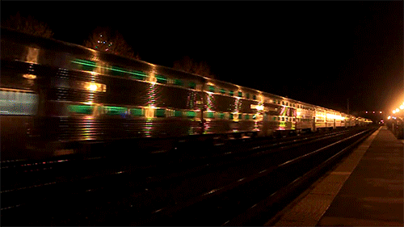

METRO ADS · CH 010
Change image
PÅ PERRONGEN
Line 4 · Centralstation
NÄSTA TÅG · NEXT TRAIN
2 MIN
· NORRGÅENDE
5 MIN
· SÖDERGÅENDE
Byt bild
Drag an image onto the screen to swap an ad
·
↑
swipe up to flip ads
Tap
Change image
to swap · swipe up to flip
·
auto-rotates every
8s